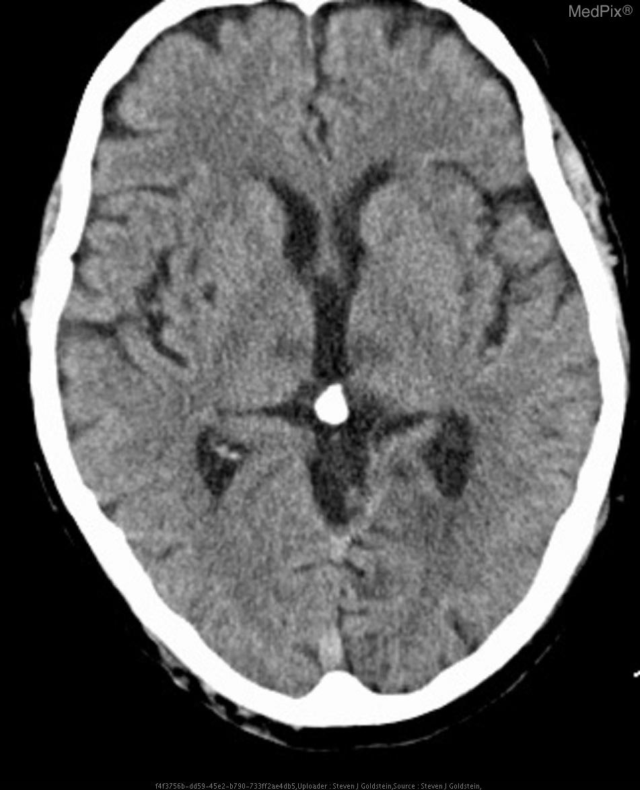
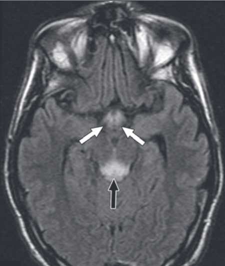

Admission bloods are unremarkable except for the following:
| Bilirubin | 80 | <21 μmol/L |
|---|---|---|
| ALP | 140 | 30–130 U/L |
| AST | 126 | 10–40 U/L |
| ALT | 52 | <41 U/L |
| Serum Albumin | 28 | 35–50 g/L |
| Lactate | 2.6 | 0.5- 2.2 mmol/L |
| INR | 1.8 | < 1.1 |
A CT Head of the patient is performed

What is the most likely diagnosis?
What treatment should this patient be given? Select TWO items.
One week later, upon full recovery from his acute condition, the patient exhibits anterograde memory loss and confabulation. What associated diagnosis can he be given?
|
 |
|
Damage to which region of the brain causes this associated condition?